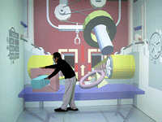

Overview
Realistic part interaction is an important component of an effective virtual assembly application. Both collision detection and part interaction modeling are needed to simulate part-to-part and hand-to-part interactions. This research examines several polygonal-based collision detection packages and compares their usage for virtual assembly applications with the Voxmap PointShell (VPS) software developed by the Boeing Company. VPS is a software developer’s toolkit for real-time collision and proximity detection, swept-volume generation, dynamic animation, and 6 degrees-of-freedom haptics which is based on volumetric collision detection and physically-based modeling. The method was found to provide realistic collision detection and physically-based modeling interaction, with good performance at the expense of contact accuracy. This research presents how VPS handles multiple dynamic part collisions and two-handed assembly using the 5DT dataglove in a projection-screen virtual environment.
Software and Hardware
Publications
Personnel
Funding
Facilities
Mechanical Engineering | VRAC | ISU | Home | E-mail | Previous